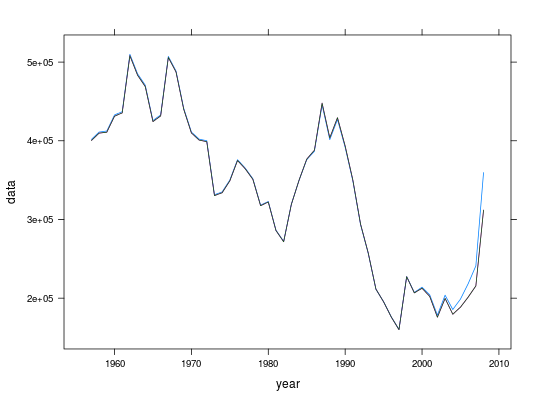
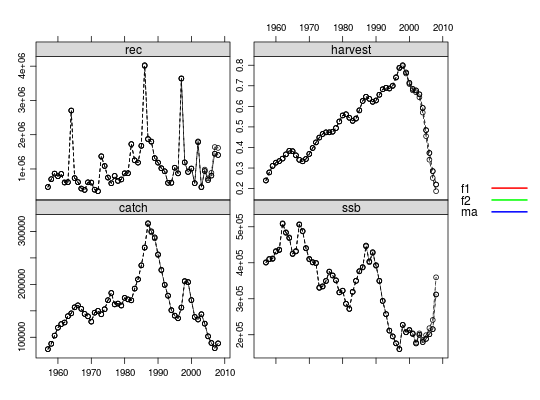

ma(object, ...)
a4aFits object with the fits to be averaged acrossstock object with the original data used for fittingfunction that will be used to extract the values for weighting; for now it must be "AIC", "BIC" or "LogLik"numeric with the number of simulations to be drawnFLStock object with iterations defined by nsim
Method to average across a set of models. This is still experimental. Use with care.
data(ple4) data(ple4.indices) f1 <- sca(ple4, ple4.indices, fmodel=~ factor(age) + s(year, k=20), qmodel=list(~ s(age, k = 4), ~ s(age, k = 4), ~ s(age, k = 3)), fit = "assessment") f2 <- sca(ple4, ple4.indices, fmodel=~ factor(age) + s(year, k=20), qmodel=list(~ s(age, k = 4)+year, ~ s(age, k = 4), ~ s(age, k = 3)), fit = "assessment") stock.sim <- ma(a4aFitSAs(list(f1=f1, f2=f2)), ple4, AIC, nsim = 100)model weights are weight..perc. f1 28.151 f2 71.849stks <- FLStocks(f1=ple4+f1, f2=ple4+f2, ma=stock.sim) flqs <- lapply(stks, ssb) flqs <- lapply(flqs, iterMedians) xyplot(data~year, groups=qname, data=flqs, type="l")
plot(stks)Warning message: the condition has length > 1 and only the first element will be used